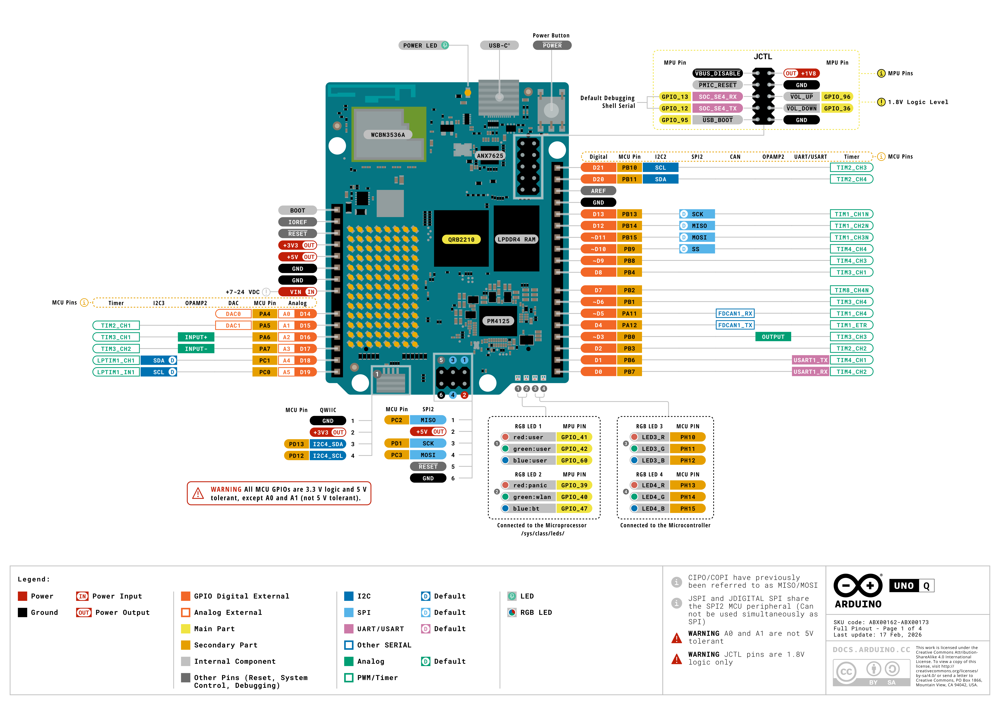

Capítulo 1. Arquitectura y características de Arduino UNO Q¶
Objetivos de aprendizaje¶
Al finalizar este capítulo, el alumnado será capaz de:
- Identificar las características principales de Arduino UNO Q.
- Diferenciar un microprocesador (MPU) de un microcontrolador (MCU).
- Comprender la arquitectura de procesamiento dual.
- Reconocer los principales componentes de la placa.
- Identificar sus interfaces de comunicación.
- Comprender la función de Linux y Zephyr.
- Comparar Arduino UNO Q con otras placas Arduino.
- Reconocer sus posibilidades en redes, IoT e inteligencia artificial.
- Aplicar las precauciones básicas de conexión eléctrica.
1. Introducción a Arduino UNO Q¶
Arduino es una plataforma de desarrollo de hardware y software que permite crear sistemas electrónicos programables.
Tradicionalmente, las placas Arduino incorporaban un microcontrolador encargado de ejecutar un programa que interactuaba directamente con sensores, pulsadores, motores y otros componentes electrónicos.
Arduino UNO Q introduce un concepto diferente: combina un ordenador capaz de ejecutar Linux con un microcontrolador especializado en el control de dispositivos físicos.
Esto permite desarrollar aplicaciones mucho más complejas que las realizadas habitualmente con un Arduino tradicional.
Por ejemplo, Arduino UNO Q puede:
- Ejecutar programas Python sobre Linux.
- Comunicarse con dispositivos mediante redes TCP/IP.
- Ofrecer servicios web.
- Procesar información procedente de sensores.
- Controlar motores y actuadores.
- Ejecutar aplicaciones de inteligencia artificial.
- Participar en sistemas IoT.
- Ejecutar aplicaciones y servicios mediante contenedores.
Arduino UNO Q y los sistemas informáticos
Arduino UNO Q puede considerarse un pequeño sistema informático embebido que integra capacidades de procesamiento general, comunicaciones y control electrónico.
Por esta razón resulta especialmente interesante para estudiantes de Administración de Sistemas Informáticos en Red (ASIX).
1.1. ¿Qué es un sistema embebido?¶
Un sistema embebido es un sistema informático diseñado para realizar funciones específicas dentro de un dispositivo o instalación.
Podemos encontrar sistemas embebidos en:
- Routers y dispositivos de red.
- Sistemas de videovigilancia.
- Equipos industriales.
- Sistemas de climatización.
- Vehículos.
- Equipos médicos.
- Sistemas de automatización.
- Dispositivos domésticos inteligentes.
Muchos sistemas embebidos utilizan microcontroladores, mientras que otros incorporan procesadores capaces de ejecutar sistemas operativos completos.
Arduino UNO Q combina ambos enfoques.
1.2. Aplicaciones en ASIX¶
En este libro utilizaremos Arduino UNO Q para desarrollar proyectos relacionados con:
| Área | Aplicación |
|---|---|
| Sistemas operativos | Administración de Linux |
| Redes | Comunicaciones TCP/IP |
| Servicios | Servidores web y API REST |
| Programación | Python y Arduino |
| Bases de datos | Almacenamiento de medidas |
| Monitorización | InfluxDB y Grafana |
| IoT | MQTT y sensores conectados |
| Inteligencia artificial | Procesamiento local de datos |
| Seguridad | Protección de dispositivos IoT |
Nuestro objetivo no será únicamente encender LED o leer sensores, sino integrar esos elementos en sistemas informáticos conectados.
2. Arquitectura de Arduino UNO Q¶
La característica más importante de Arduino UNO Q es su arquitectura de procesamiento dual.
La placa incorpora dos unidades de procesamiento:
- Un microprocesador Qualcomm Dragonwing QRB2210.
- Un microcontrolador STMicroelectronics STM32U585.
Ambos trabajan de manera coordinada, pero desempeñan funciones diferentes.
2.1. Microprocesador Qualcomm Dragonwing QRB2210¶
El Qualcomm Dragonwing QRB2210 es el procesador principal encargado de ejecutar el sistema operativo Linux y las aplicaciones de alto nivel.
Sus características principales son:
| Característica | Descripción |
|---|---|
| Fabricante | Qualcomm |
| Modelo | Dragonwing QRB2210 |
| Arquitectura | Arm Cortex-A53 |
| Núcleos | 4 |
| Frecuencia | Hasta 2,0 GHz |
| Sistema operativo | Debian Linux |
| Aceleración gráfica | GPU Adreno |
| Aplicaciones | Linux, Python, redes, multimedia e IA |
Este procesador permite ejecutar un sistema operativo multitarea.
Por ejemplo, puede ejecutar simultáneamente:
- Un programa Python.
- Un servidor web.
- Un servicio de comunicaciones MQTT.
- Procesos de administración de Linux.
- Aplicaciones de procesamiento de imágenes.
Ejemplo: servidor web
Imaginemos que queremos consultar desde un navegador la temperatura de un aula.
El procesador Qualcomm puede ejecutar un servidor web que recibe peticiones HTTP y devuelve la temperatura medida por un sensor.
El microcontrolador STM32 puede encargarse de leer periódicamente ese sensor.
2.2. Microcontrolador STM32U585¶
El segundo procesador es un microcontrolador STM32U585 de STMicroelectronics.
Está diseñado para realizar tareas de control electrónico con tiempos de respuesta precisos.
| Característica | Descripción |
|---|---|
| Fabricante | STMicroelectronics |
| Modelo | STM32U585 |
| Arquitectura | Arm Cortex-M33 |
| Frecuencia | Hasta 160 MHz |
| Memoria Flash | 2 MB |
| Memoria SRAM | 786 KB |
| Sistema | Arduino Core sobre Zephyr |
| Función | Control de entradas y salidas |
El microcontrolador puede encargarse de:
- Leer pulsadores.
- Encender y apagar LED.
- Leer señales analógicas.
- Generar señales PWM.
- Controlar actuadores.
- Gestionar temporizadores.
- Comunicarse con sensores mediante I2C o SPI.
Diferencia fundamental
El microprocesador está orientado a ejecutar aplicaciones complejas y un sistema operativo completo.
El microcontrolador está orientado a controlar dispositivos físicos con tiempos de respuesta precisos.
Arduino UNO Q integra ambos tipos de procesamiento en una misma placa.
2.3. Comunicación entre los dos procesadores¶
Los dos procesadores deben intercambiar información para trabajar conjuntamente.
Arduino proporciona mecanismos de comunicación basados en Bridge y llamadas a procedimientos remotos (RPC).
RPC significa Remote Procedure Call, o llamada a procedimiento remoto.
Este mecanismo permite que una aplicación solicite operaciones ejecutadas por otro procesador.
Por ejemplo:
- Un sensor detecta una determinada temperatura.
- El STM32 obtiene el valor.
- El valor se comunica al sistema Linux.
- Una aplicación Python procesa la información.
- Linux envía los datos a un servidor.
- Si es necesario, el STM32 activa un ventilador.
De esta manera, cada procesador realiza las tareas para las que está mejor preparado.
Ejemplo de aplicación
Podemos desarrollar un sistema de climatización inteligente.
El STM32 lee la temperatura y controla un ventilador.
El procesador Qualcomm ejecuta Linux, registra las temperaturas y proporciona una interfaz web.
Posteriormente, podremos incorporar inteligencia artificial para analizar los datos y tomar decisiones.
3. Características técnicas¶
Arduino UNO Q dispone de recursos de procesamiento, memoria, almacenamiento y comunicaciones propios de un pequeño ordenador.
3.1. Memoria y almacenamiento¶
La placa se comercializa en distintas configuraciones.
| Característica | Versión 2 GB | Versión 4 GB |
|---|---|---|
| Memoria RAM | 2 GB | 4 GB |
| Almacenamiento eMMC | 16 GB | 32 GB |
| Procesador principal | QRB2210 | QRB2210 |
| Microcontrolador | STM32U585 | STM32U585 |
| Sistema operativo | Debian Linux | Debian Linux |
La memoria RAM se utiliza para ejecutar el sistema operativo y los programas.
El almacenamiento eMMC permite guardar:
- El sistema operativo.
- Aplicaciones.
- Bibliotecas.
- Programas Python.
- Archivos de configuración.
- Datos generados por los proyectos.
A diferencia de la memoria RAM, el almacenamiento eMMC conserva la información cuando se apaga la placa.
Relación con ASIX
La memoria RAM y el almacenamiento eMMC cumplen funciones similares a las que encontramos en un ordenador convencional.
Durante el curso utilizaremos herramientas de Linux para consultar el consumo de memoria, el espacio disponible y los procesos en ejecución.
3.2. Conectividad inalámbrica¶
Arduino UNO Q incorpora conectividad inalámbrica:
| Tecnología | Características |
|---|---|
| Wi-Fi | Wi-Fi 5 |
| Bandas Wi-Fi | 2,4 GHz y 5 GHz |
| Bluetooth | Bluetooth 5.1 |
La conectividad Wi-Fi permite conectar la placa a una red local y acceder a servicios disponibles en ella.
También permite que otros dispositivos se comuniquen con aplicaciones ejecutadas en Arduino UNO Q.
Por ejemplo:
- Un ordenador puede acceder a un servidor web de la placa.
- Arduino UNO Q puede enviar datos a un servidor MQTT.
- Una aplicación puede consultar una API REST.
- Un servidor puede almacenar las medidas de sensores.
Conexión Ethernet
Arduino UNO Q no incorpora un puerto RJ45 Ethernet integrado.
Para determinadas configuraciones de red puede utilizarse un adaptador compatible.
La disponibilidad de una interfaz Ethernet dependerá del adaptador, la conexión utilizada y los controladores del sistema Linux.
3.3. Interfaces de comunicación¶
La placa dispone de diferentes interfaces utilizadas para conectar dispositivos electrónicos.
| Interfaz | Utilidad |
|---|---|
| GPIO | Entradas y salidas digitales |
| ADC | Lectura de señales analógicas |
| PWM | Control mediante modulación de pulsos |
| UART | Comunicación serie |
| I2C | Comunicación con sensores y módulos |
| SPI | Comunicación serie síncrona |
| CAN | Comunicación utilizada en automatización |
| USB-C | Alimentación, datos y funciones adicionales |
| Qwiic | Conexión de módulos compatibles I2C |
Estas interfaces permiten desarrollar proyectos con numerosos componentes electrónicos.
Distribución de pines de Arduino UNO Q¶
La siguiente figura muestra el pinout oficial de Arduino UNO Q, con la identificación de los conectores, pines de alimentación, entradas y salidas digitales y analógicas, y buses de comunicación.

Figura 1.1. Pinout oficial de Arduino UNO Q. Fuente: Arduino, documento ABX00162-ABX00173, actualizado el 17 de febrero de 2026.
Precauciones con los niveles eléctricos
Los GPIO del microcontrolador STM32 trabajan con lógica de 3,3 V. Según el pinout oficial, admiten señales de 5 V excepto A0 y A1, que no son tolerantes a 5 V.
Los pines del conector JCTL trabajan con lógica de 1,8 V.
Antes de realizar cualquier conexión, comprueba las características eléctricas del pin correspondiente.
3.4. Elementos integrados¶
Arduino UNO Q incorpora también:
- Una matriz de LED azules de 8 × 13.
- Cuatro LED RGB controlables.
- Un pulsador de usuario.
- Un conector Qwiic.
- Conectores de expansión compatibles con el formato Arduino UNO.
Estos elementos permiten realizar determinadas prácticas sin necesidad de montar circuitos externos.
4. Sistemas operativos¶
Arduino UNO Q utiliza dos entornos de ejecución diferentes.
4.1. Debian Linux¶
El procesador Qualcomm ejecuta Debian Linux.
Debian es una distribución GNU/Linux ampliamente utilizada en servidores, estaciones de trabajo y sistemas embebidos.
En Arduino UNO Q podremos estudiar:
- Estructura del sistema de archivos.
- Usuarios y permisos.
- Procesos y servicios.
- Interfaces de red.
- Direccionamiento IP.
- Acceso remoto mediante SSH.
- Instalación de paquetes.
- Automatización mediante scripts.
- Ejecución de servicios y aplicaciones.
Esto permitirá aplicar conocimientos adquiridos en los módulos de administración de sistemas operativos y redes.
4.2. Zephyr¶
El microcontrolador STM32 ejecuta Arduino Core sobre Zephyr.
Zephyr es un sistema operativo de tiempo real (RTOS) diseñado para sistemas embebidos.
Un RTOS facilita la ejecución de tareas que necesitan un comportamiento temporal controlado.
Por ejemplo, la lectura periódica de un sensor o la generación de determinadas señales de control.
Linux frente a Zephyr
Linux está orientado a ejecutar múltiples aplicaciones y servicios complejos.
Zephyr está orientado a dispositivos embebidos y tareas que necesitan tiempos de respuesta controlados.
En Arduino UNO Q ambos entornos pueden colaborar para desarrollar una misma aplicación.
5. Alimentación y seguridad eléctrica¶
Antes de conectar sensores y actuadores, debemos conocer las características eléctricas de la placa.
Arduino UNO Q puede recibir alimentación mediante USB-C y dispone también de una entrada VIN.
Según las especificaciones del fabricante:
| Entrada | Características |
|---|---|
| USB-C | Alimentación de 5 V, hasta 3 A |
| VIN | Entrada de 7 a 24 V |
| GPIO del microcontrolador | Dominio lógico de 3,3 V |
| Determinadas señales del procesador Qualcomm | Dominio lógico de 1,8 V |
Precauciones eléctricas
No debemos conectar directamente señales de 5 V a los GPIO de 3,3 V del microcontrolador.
Algunas señales asociadas al procesador Qualcomm trabajan a 1,8 V.
Antes de conectar un componente debemos consultar el pinout oficial y comprobar su tensión de funcionamiento.
Nunca debemos conectar motores directamente a los GPIO. Para ello utilizaremos controladores adecuados y fuentes de alimentación compatibles.
5.1. Uso de protoboard¶
Durante las prácticas utilizaremos una placa protoboard para construir circuitos sin soldadura.
Los componentes se conectarán mediante cables Dupont.
Antes de alimentar un circuito comprobaremos:
- La polaridad de los componentes.
- La tensión de alimentación.
- El valor de las resistencias.
- La conexión común de GND cuando corresponda.
- La ausencia de cortocircuitos.
- La compatibilidad eléctrica de los dispositivos.
En los siguientes capítulos aprenderemos a conectar LED, pulsadores, sensores y actuadores.
6. Comparación con otras placas Arduino¶
Arduino UNO Q pertenece a la familia Arduino UNO, pero presenta diferencias importantes respecto a generaciones anteriores.
| Característica | UNO R3 | UNO R4 WiFi | UNO Q |
|---|---|---|---|
| Arquitectura principal | AVR 8 bits | Arm Cortex-M4 | Arm Cortex-A53 + Cortex-M33 |
| Microcontrolador | ATmega328P | Renesas RA4M1 | STM32U585 |
| Linux integrado | No | No | Sí |
| Procesamiento dual MPU + MCU | No | No | Sí |
| Wi-Fi integrado | No | Sí | Sí |
| Aplicaciones Python sobre Linux | No | No | Sí |
| Aplicaciones de IA en la propia placa | Muy limitadas | Limitadas | Sí, según el modelo y recursos |
| Uso principal | Electrónica básica | Electrónica e IoT | Linux, IoT, electrónica e IA |
Arduino UNO Q no es simplemente un Arduino UNO tradicional con un procesador más rápido.
Su arquitectura permite ejecutar aplicaciones propias de un sistema informático y combinarlas con tareas de control electrónico.
Compatibilidad
Aunque Arduino UNO Q conserva el formato físico de la familia UNO, no todos los shields y módulos antiguos son necesariamente compatibles.
Antes de conectar un shield debemos comprobar su alimentación, sus niveles lógicos y la asignación de pines.
7. Arduino UNO Q en redes e inteligencia artificial¶
La combinación de Linux, conectividad y control electrónico permite utilizar Arduino UNO Q en proyectos de distintos ámbitos.
7.1. Servidores y servicios de red¶
Podemos ejecutar aplicaciones que proporcionen servicios a otros equipos.
Por ejemplo:
- Servidores HTTP.
- API REST.
- Clientes y servidores MQTT.
- Aplicaciones Python.
- Servicios de monitorización.
- Aplicaciones ejecutadas en contenedores.
7.2. Internet de las cosas¶
El Internet de las cosas (IoT) conecta dispositivos físicos con redes y aplicaciones informáticas.
Arduino UNO Q puede actuar como un nodo IoT que recoge información de sensores y la envía a otros sistemas.
También puede funcionar como pasarela entre dispositivos electrónicos y servicios de red.
7.3. Inteligencia artificial¶
La inteligencia artificial en el borde, conocida como Edge AI, consiste en ejecutar determinados modelos de inteligencia artificial cerca del lugar donde se generan los datos.
Esto puede reducir la necesidad de enviar continuamente información a servidores externos.
Algunas aplicaciones son:
- Clasificación de imágenes.
- Detección de objetos.
- Reconocimiento de patrones.
- Análisis de señales.
- Automatización inteligente.
La viabilidad de cada aplicación dependerá de los recursos de hardware disponibles y de la compatibilidad de los modelos y bibliotecas.
8. Actividad práctica: identificación del hardware¶
Objetivo¶
Identificar físicamente los principales componentes de Arduino UNO Q y relacionarlos con su función.
Material necesario¶
- Una placa Arduino UNO Q.
- Un ordenador con acceso a Internet.
- La documentación oficial de Arduino.
- Una hoja de trabajo o documento digital.
Desarrollo¶
Paso 1. Coloca Arduino UNO Q sobre una superficie limpia y no conductora.
Paso 2. Sin conectar la alimentación, observa ambas caras de la placa.
Paso 3. Accede a la documentación oficial:
https://docs.arduino.cc/hardware/uno-q/
Paso 4. Localiza el esquema de distribución de componentes y el pinout oficial.
Paso 5. Identifica los siguientes elementos:
- Procesador Qualcomm.
- Microcontrolador STM32.
- Conector USB-C.
- Conectores GPIO.
- Conector Qwiic.
- Matriz de LED.
- LED RGB.
- Pulsador de usuario.
- Conectores de alimentación.
Paso 6. Completa la siguiente tabla:
| Componente | Función | Identificado |
|---|---|---|
| Qualcomm QRB2210 | ||
| STM32U585 | ||
| USB-C | ||
| GPIO | ||
| Qwiic | ||
| Matriz LED | ||
| LED RGB | ||
| Pulsador |
Paso 7. Realiza una fotografía de la placa e identifica mediante etiquetas al menos seis de sus componentes.
Paso 8. Redacta un breve documento explicando las diferencias entre el procesador Qualcomm y el microcontrolador STM32.
Cuestiones de evaluación¶
- ¿Por qué Arduino UNO Q dispone de dos procesadores?
- ¿Qué procesador ejecuta Debian Linux?
- ¿Qué función desempeña el STM32U585?
- ¿Qué es un sistema operativo de tiempo real?
- ¿Qué diferencia existe entre RAM y eMMC?
- ¿Qué interfaces permiten conectar sensores?
- ¿Qué precauciones deben tomarse con los GPIO?
- ¿Qué ventajas ofrece Arduino UNO Q para proyectos IoT?
- ¿Qué utilidad puede tener SSH en esta placa?
- ¿Por qué Arduino UNO Q resulta interesante para Edge AI?
Entrega¶
El alumnado entregará un documento PDF que incluya:
- Portada identificativa.
- Fotografía de la placa con sus componentes señalados.
- Tabla de identificación completada.
- Respuestas a las cuestiones.
- Conclusión personal sobre las posibilidades de Arduino UNO Q.
9. Resumen del capítulo¶
Arduino UNO Q combina un microprocesador Qualcomm y un microcontrolador STM32 en una misma placa.
El procesador Qualcomm ejecuta Debian Linux y permite utilizar aplicaciones complejas, servicios de red y herramientas de programación.
El microcontrolador STM32 se encarga de tareas de control electrónico y ejecuta Arduino Core sobre Zephyr.
Esta arquitectura permite integrar sistemas operativos, redes, electrónica e inteligencia artificial.
En los próximos capítulos aprenderemos a preparar el entorno de desarrollo y a ejecutar nuestros primeros programas.